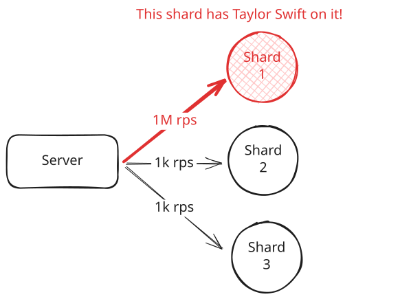
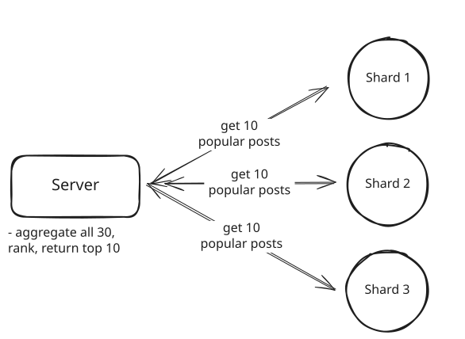

Core Concepts
Sharding
Learn about sharding and when to use it in system design interviews.
Your app is taking off. Traffic is growing, users are signing up, and your database keeps getting bigger. At first you solve this by upgrading to a larger database instance with more CPU, memory, and storage. That works for a while.
But eventually you hit the ceiling of what a single machine can handle. Queries slow down, writes become a bottleneck, and storage approaches the limit. Even powerful cloud databases like Amazon Aurora max out around 256 TiB.
When a single database can’t keep up anymore, you have only one real option:
Split your data across multiple machines.
This is called sharding. While it is a necessity at scale, it also introduces new challenges. We'll cover how and when to shard, as well as what to watch out for.
People often use the words "partitioning" and "sharding" to mean the same thing. Technically they are slightly different. Partitioning usually refers to splitting data within a single database instance, often by table ranges or hash partitions. Sharding means splitting data across multiple machines. In practice most engineers use the terms loosely, so do not get hung up on the wording. Just be clear about whether your data lives on one machine or many.
First, what is Partitioning?
Partitioning means splitting a large table into smaller pieces inside a single database instance. It does not add more machines. Instead it organizes data so the database can work more efficiently.
Consider an orders table with 500 million rows and 2 TB of data. A query for last month’s orders has to scan the entire table. Indexes become huge and slow to maintain while routine operations like vacuuming, analyzing, or rebuilding indexes can lock the whole table and impact performance.
Partitioning solves this problem by breaking that large table into smaller partitions. The data does not move off the machine. It is simply divided into logical pieces the database can manage separately. Now a query for last month’s orders only scans the relevant partition instead of the full table.
There are two common types of partitioning:
Horizontal partitioning: Split rows across partitions. For example, one partition per year of orders. Same columns, fewer rows per partition.
Vertical partitioning: Split columns across partitions. For example, keep frequently accessed columns in one partition and large or rarely used columns in another. Same rows, fewer columns per partition.
What is Sharding?
Sharding is horizontal partitioning across multiple machines. Each shard holds a subset of the data, and together the shards make up the full dataset. Unlike partitioning, which stays within a single database instance, sharding spreads the load across many independent databases.
For example, if we partitioned our order data by id, we might end up with something like this:

Sharding
Each shard is a standalone database with its own CPU, memory, storage, and connection pool. No single machine holds all the data or handles all the traffic, which allows both storage capacity and read/write throughput to scale as you add more shards.
Sharding solves scaling but introduces new problems. You now have to choose a shard key, route queries to the right shard, avoid hotspots, and rebalance data as shards grow. We will cover how to handle these next.
How to Shard Your Data
When you decide to shard, you need to make two decisions that work together:
What to shard by: The field or column you use to split the data. It defines how the data is grouped.
How to distribute it: The rule for assigning those groups to shards. It defines how the data is distributed across machines.
Choosing Your Shard Key
In an interview, a common statement is "I'm going to shard by [field]". The key is knowing what field to use as your shard key and why.
Bad shard key leads to uneven data distribution, hot spots where one shard gets pounded while others sit idle, and queries that have to hit every shard to find what they need. A good shard key distributes data evenly, aligns with your query patterns, and scales as your system grows.
Here's what makes a good shard key:
High cardinality: The key should have many unique values. Sharding by a boolean field (true/false) means you can only have two shards max, which defeats the purpose. Sharding by user ID when you have millions of users gives you plenty of room to distribute data.
Even distribution: Values should spread evenly across shards. If you shard by country and 90% of your users are in the US, that shard will be massively larger than the others. User ID usually distributes well. Creation timestamps can work if new records don't all pile onto the most recent shard.
Aligns with queries: Your most common queries should ideally hit just one shard. If you shard users by user_id, queries like "get user profile" or "get user's orders" hit a single shard. Queries that span all shards become expensive.
For example, some good shard keys would be:
🟢 user_id for user-centric app: High cardinality (millions of users), even distribution, and most queries are scoped to a single user anyway ("show me this user's data"). Perfect fit.
🟢 order_id for an e-commerce orders table: High cardinality (millions of orders), queries are usually scoped to a specific order ("get order details", "update order status"), and orders distribute evenly over time.
Whereas bad ones could be:
🔴 is_premium (boolean): Only two possible values means only two shards. One shard gets all premium users, the other gets free users. If most users are free, that shard is overloaded.
🔴 created_at for a growing table: All new writes go to the most recent shard. That shard becomes a hot spot for writes while older shards handle almost no traffic.
Sharding Strategies
Once you know your shard key, you need to decide how to distribute that data across shards. There are three main strategies, each with different trade-offs.
Range-Based Sharding
Range sharding is the most straightforward. It just groups records by a continuous range of values. You pick a shard key like user_id or created_at, then assign value ranges to shards.
For example, if we were to shard by user_id, we might assign the first 1 million users to shard 1, the next 1 million users to shard 2, and so on.
Shard 1 → User IDs 1–1M
Shard 2 → User IDs 1M–2M
Shard 3 → User IDs 2M–3MThe main advantage of range-based sharding is simplicity and support for efficient range scans. If you need all orders between user IDs 500K and 600K, you only hit one shard.
Most real-world access patterns don't distribute evenly across ranges. If you shard orders by created_at, almost all your traffic hits the most recent shard because users care about recent orders. New writes only go to the latest shard. Old shards sit mostly idle.
Range-based sharding works best when different users naturally query different ranges. Multi-tenant systems, for example, are a good fit. These are systems where each company gets a range of IDs. Think of a SaaS application where each client has a range of user IDs. Company A's users only query Company A's range, and Company B's users only query Company B's range. This distributes the load across shards.
Hash-Based Sharding (Default)
Hash sharding uses a hash function to evenly distribute records across shards. Instead of assigning ranges, you take a shard key like user_id, hash it, and use the result to pick a shard.
For example, if we had 4 shards, we could route users like this:
shard = hash(user_id) % 4
User 42 → hash(42) % 4 = Shard 2
User 99 → hash(99) % 4 = Shard 3
User 123 → hash(123) % 4 = Shard 1The big advantage of hash-based sharding is even distribution. Since the hash function scrambles the input values, new users get distributed evenly across all shards.
The downside shows up when you need to add or remove shards. If you go from 4 shards to 5, the modulo operation changes from % 4 to % 5, which means almost every record maps to a different shard. You have to move massive amounts of data around.
This is where consistent hashing comes in. Instead of simple modulo, consistent hashing minimizes data movement when you add or remove shards. We cover this in detail in our consistent hashing page, but the key point is that hash-based sharding works great as long as you have a plan for resharding.
Generally speaking, this is the default and most common sharding strategy. It's also what your interviewer will likely assume you're using unless you explicitly state otherwise.
Directory-Based Sharding
Directory sharding uses a lookup table to decide where each record lives. Instead of using a formula, you store shard assignments in a mapping table or service.
For example:
user_to_shard
---------------
User 15 → Shard 1
User 87 → Shard 4
User 204 → Shard 2The power of directory-based sharding is flexibility. If a particular user generates tons of traffic, you can move them to a dedicated shard. If you need to rebalance load, you just update the mapping table. You can implement complex sharding logic that would be impossible with a simple hash function.
The downside is that every single request requires a lookup. Before you can query user data, you have to ask the directory service which shard that user lives on. This adds latency to every request and makes the directory service a critical dependency. If the directory goes down, your entire system stops working even if all the data shards are healthy.
Directory-based sharding makes sense when you need maximum flexibility and can afford the extra lookup cost. Most systems start with hash-based or range-based sharding and only use a directory if they have specific requirements that demand it.
Realistically, while directory-based sharding is a valid solution for dynamic use cases, it is rarely the answer in a system design interview. It introduces a single point of failure and adds latency to every request, which will prompt your interviewer to ask a number of follow-up questions that could derail the conversation.
Challenges of Sharding
Sharding solves your scaling problem but introduces new ones. Data is now distributed across multiple machines, which means you have to deal with uneven load, queries that span shards, and maintaining consistency across databases. These challenges are unavoidable, but you can design around them if you know what to expect.
Hot Spots and Load Imbalance
Even with a good shard key, some shards can end up handling way more traffic than others. This is called a hot spot, and it negates the main benefit of sharding because one overloaded shard becomes your bottleneck.
The most common cause is the celebrity problem. If you shard users by user_id, Taylor Swift's shard handles 1000x more traffic than a normal user's shard. Every time someone views her profile, likes her post, or sends her a message, that request hits the same shard. Hash-based distribution doesn't help here because the issue isn't the distribution strategy, it's that some keys are inherently more active than others.

Hot Spots
Time-based sharding creates a different kind of hot spot. If you shard by creation date, all new writes go to the most recent shard. That shard handles all the write traffic while older shards sit mostly idle handling only reads of historical data.
You can detect hot spots by monitoring shard metrics like query latency, CPU usage, and request volume. When one shard consistently shows higher metrics than others, you have a hot spot problem.
Here's how to handle them:
Isolate hot keys to dedicated shards: If Taylor Swift's account generates too much traffic, move it to a dedicated shard that only handles celebrity accounts. This is why directory-based sharding can be useful for specific cases, though you probably wouldn't start there.
Use compound shard keys: Instead of sharding just by user_id, combine it with another dimension like hash(user_id + date). This spreads a single user's data across multiple shards over time, which helps if the hot spot is both high volume and spans time periods.
Dynamic shard splitting: Some databases support automatically splitting a shard when it gets too large or too hot. For example, MongoDB's balancer will split and migrate range-based chunks (including when using a hashed shard key) to maintain balance. By contrast, Vitess supports online resharding, but it is operator-driven (initiated and managed by operators), not automatic.
Cross-Shard Operations
When your data lives on multiple machines, any query that needs data from more than one shard becomes expensive. Instead of querying one database, you have to query multiple shards, wait for all of them to respond, and aggregate the results yourself.
The problem shows up with queries that don't align with your shard key. If you shard users by user_id, a query like "get user 12345's profile" hits one shard. Fast and simple. But a query like "get the top 10 most popular posts globally" has to check every shard because posts are scattered across all user shards. You send the query to all 64 shards, wait for all 64 responses, merge the results, and then return the top 10. That's 64x the network calls and latency.

Cross-Shard Operations
You can't eliminate cross-shard queries entirely, but you can minimize them:
Cache the results: If "top 10 most popular posts" requires hitting all shards, cache the result for 5 minutes. The first query is expensive, but the next thousand requests hit the cache instead of querying 64 shards. This works especially well for queries that don't need real-time accuracy (ie. eventual consistency is acceptable). Leaderboards, trending content, and aggregate stats are perfect candidates.
Denormalize to keep related data together: If you frequently need to query posts along with user data, store some post information directly on the user's shard. Yes, this duplicates data. Yes, it makes updates more complex. But it lets you query everything from one shard, which is often worth the trade-off.
Accept the hit for rare queries: Sometimes a query genuinely needs to hit all shards and that's okay as long as it's infrequent. An admin dashboard that shows "total users across all shards" can afford to be slow if it's only loaded a few times a day.
In interviews, cross-shard operations are often a signal that something in your design needs rethinking. If you find yourself saying "we'll query all shards and aggregate the results" for a common use case, pause and consider: Can I denormalize to avoid this? Can I cache it? Can I precompute it with a background job? Interviewers expect you to minimize cross-shard queries, not just accept them as inevitable.
Maintaining Consistency
When your data lives on a single database, transactions are straightforward. If you need to deduct inventory and create an order record atomically, you wrap both operations in a database transaction. Either both succeed or both fail. The database handles the consistency guarantees.
Sharding breaks this. If the user's account lives on shard 1 and the transaction record lives on shard 2, you can't use a single database transaction anymore. You're coordinating writes across two independent databases that don't know about each other.
The textbook solution is two-phase commit (2PC), where a coordinator asks all shards to prepare the transaction, waits for everyone to confirm they're ready, then tells everyone to commit. This guarantees consistency but is slow and fragile. If any shard or the coordinator fails mid-transaction, the whole system can get stuck. Most production systems avoid 2PC because the performance and reliability trade-offs aren't worth it.
So what do you do instead?
Design to avoid cross-shard transactions: This is the best solution. If you shard users by user_id, keep all of a user's data on their shard. Account balance, transaction history, profile information, all on one shard. Now all your transactions are single-shard transactions, which are fast and reliable.
Use sagas for multi-shard operations: When you absolutely need to coordinate across shards, use the saga pattern. Break the operation into a sequence of independent steps, each with a compensating action. If step 3 fails, you run compensating actions for steps 2 and 1 to undo the work. This gives you eventual consistency without the fragility of 2PC.
For example, transferring money between users on different shards:
- Deduct money from User A's account (shard 1)
- Add money to User B's account (shard 2)
- If step 2 fails, refund User A (compensating action)
Accept eventual consistency: For many operations, strict consistency isn't required. If you're updating a user's follower count and that count is denormalized across multiple shards for fast profile lookups, it's fine if some shards show different counts for a few seconds. Eventually all shards will converge to the correct number. This is much simpler than coordinating a distributed transaction, and for most applications, a brief period of inconsistency is acceptable.
The TLDR is that most applications can be designed to avoid cross-shard transactions entirely. If you find yourself constantly needing distributed transactions, you probably chose the wrong shard key or the wrong shard boundaries.
Sharding in Modern Databases
I have some good news for you. You probably won't implement sharding from scratch. Most modern distributed databases handle sharding automatically.
Common NoSQL databases like Cassandra, DynamoDB, and MongoDB all let you specify a partition key and handle the rest, but they do not all use the same distribution mechanism:
- Cassandra uses a partitioner (e.g., Murmur3Partitioner) with virtual nodes, which is a form of consistent hashing to map partition keys to token ranges on nodes.
- DynamoDB hashes the partition key to route items to internal partitions and splits/merges partitions as they grow; this is not classic ring-based consistent hashing exposed to users.
- MongoDB shards data into range-based chunks on the shard key. If you choose a hashed shard key, the ranges are over the hash space. A background balancer automatically splits and migrates chunks to keep shards balanced. It is not classic consistent hashing.
They automatically rebalance when you add capacity and route queries to the right shards, but the mechanics differ.
SQL databases have also matured and made sharding easier than it once was. Vitess and Citus are popular open-source sharding layers that sit in front of PostgreSQL or MySQL. They handle query routing, cross-shard operations, and resharding without you having to build it yourself. Cloud providers like AWS Aurora and Google Cloud Spanner offer distributed SQL with built-in sharding.
In interviews, it's enough to say "We'll use DynamoDB with user_id as the partition key" or "We'll shard using Vitess on user_id and plan for operator-driven online resharding." You don't need to implement sharding internals unless you're specifically asked.
Sharding in System Design Interviews
Ok, that is all fine and well, but what should you actually say/do in an interview?
Sharding comes up just about anytime you are discussing scaling. The key is knowing when to bring it up, what to say, and what mistakes to avoid.
When to Mention Sharding
Be careful not to make the mistake of prematurely sharding. You need to establish why a single database won't work first.
Bring up sharding when you're discussing capacity planning and hit one of these limits:
- Storage: "We have 500M users with 5KB of data each, that's 2.5TB. A single Postgres instance can handle that, but if we grow 10x we'll need to shard."
- Write throughput: "We're expecting 50K writes per second during peak. A single database will struggle with that write load, so we should shard."
- Read throughput: "Even with read replicas, if we're serving 100M daily active users making multiple queries each, we'll need to distribute the read load across shards."
The formula is simple:
- Identify the bottleneck
- Explain why single database won't scale
- Propose sharding
You can use our Numbers to Know in order to get a good sense of when you may hit reasonable limits with a single database.
By far the number one sharding mistake I see in interviews is candidates introducing sharding before they've proven it's necessary. Slow down, do the math, and make sure sharding is actually needed before you start explaining how you'd do it.
What to Say
Here's how to walk through sharding in an interview using a social media app as an example:
1. Propose a shard key based on your access patterns "For this social media app, most queries are user-centric. When someone loads their feed, we're querying their posts, their followers, their likes. That's all scoped to a single user. So I'd shard by user_id."
2. Choose your distribution strategy "I'd use hash-based sharding with consistent hashing. Hash the user_id to distribute users evenly across shards."
3. Call out the trade-offs "The trade-off is that global queries become expensive. If we need 'trending posts across all users' we have to query all shards and aggregate results. We can handle that by caching trending content and pre-computing it with a background job rather than calculating it on every request."
4. Address how you'll handle growth "We'll start with 64 shards, which gives us room to grow. Consistent hashing makes it easier to add shards later without resharding all the data. If we need more capacity, we can add shards and only a fraction of the data moves."
Notice how this flows naturally. You're not just listing facts, you're walking through your reasoning and showing you understand the trade-offs.
Conclusion
Sharding is what you do when a single database can't handle your scale anymore. You split data across multiple machines to increase storage capacity and throughput.
There are two main decisions that matter: pick a shard key that aligns with your query patterns, and choose a distribution strategy that spreads load evenly. Get these wrong and you'll have hot spots and expensive cross-shard queries.
In interviews, bring up sharding when you've identified a database bottleneck. Walk through your shard key choice, explain the trade-offs, and show you've thought about cross-shard queries and resharding. Most importantly, don't shard too early. A well-tuned single database can get you surprisingly far.
Test Your Knowledge
Answer the question below to find your gaps.
Question 1 of 15
What makes a good shard key?
1
Always use creation timestamp
2
High cardinality and even distribution
3
Low cardinality and uneven distribution
4
Boolean fields for simplicity